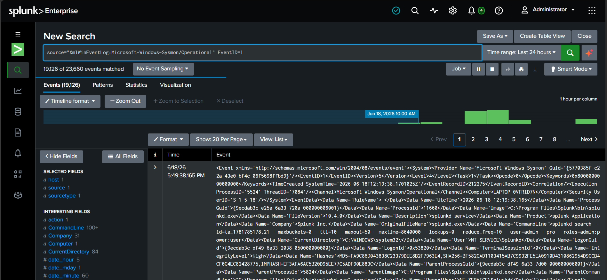
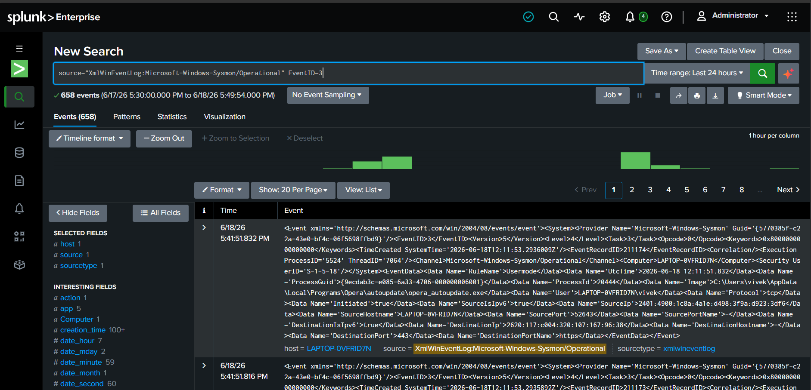
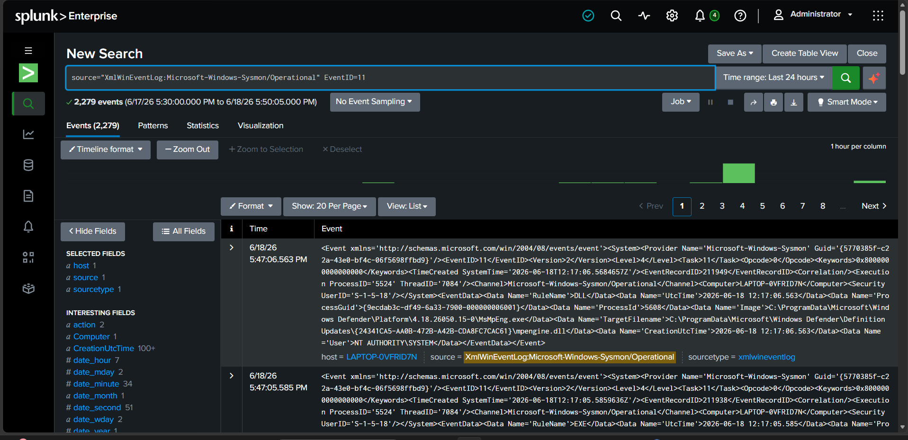
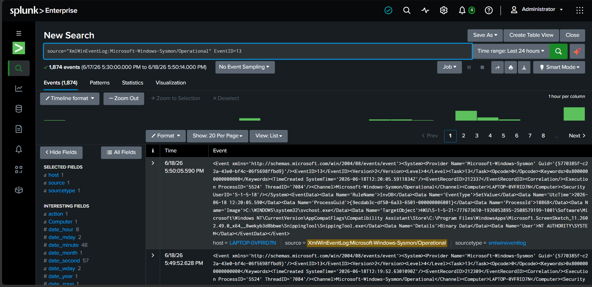

This lab focused on ingesting Windows Event Logs into Splunk, performing basic searches using SPL (Search Processing Language), filtering events, and understanding how security analysts investigate logs during day-to-day monitoring activities.
The goal of this lab was to understand the fundamentals of Splunk log analysis by collecting Windows Event Logs and performing searches to identify system activity, user actions, and security-relevant events.
The following environment was used during this investigation:
The investigation was performed using the following workflow:
Example searches used during the investigation:
index=* index=main index=main host=WIN11 index=main sourcetype=WinEventLog index=main EventCode=4624
The following Sysmon events were investigated and analyzed during this lab:
Captured process execution events to identify launched applications, command-line arguments, parent-child process relationships, and suspicious process activity.

Monitored outbound and inbound network connections to identify communication between systems, suspicious destinations, and potential reconnaissance activity.

Tracked file creation activity to detect newly created files, downloaded content, and potential malware-related artifacts.

Investigated registry modifications that could indicate persistence mechanisms, software configuration changes, or attacker activity.

During the investigation, Windows Event Logs were successfully ingested into Splunk and queried using SPL. The lab demonstrated how analysts can quickly locate events, filter activity, and investigate system behavior through centralized logging.